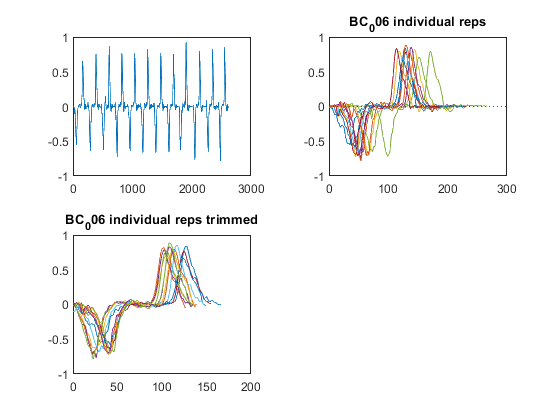

movement quality functional activity
TO DO selecteer de "rust fases" voor en na de gesegmenteerde herhalingen en verwijder deze. Plak daarna de signalen weer aan elkaar.
Contents
- 1) Input
- 2) Load data
- 2.1) Load xsens data
- 3) Event detection
- 3.1) excessive "rest" periods
- 4) table stetup and calculati9on of the movement quality parameters
- 4.1) Lyapunov exponent matlab function
- 4.2) LDLJ_A
- 4.3) SPARC --> SPECTRAL ARC LENGTH ON RAW ANGULAR VELOCITY
- 4.4) sample entropy Jill --> TO defines tollerance
- 4.5) Autocorrelation
- 4.6) Movement speed based on the repetitions
- 4.7) RMS
- 5) Save raw acc and avel data to struct
- 6) Save movement quality to table
- 7) everything in one gigantic table.
I need to run this file using publish en use that as a help function. Which means I need to explain everyting in more detail. When the code is finished :)
BC_014 T2 --> heeft veel last. Dus misschien interessant om die data te bekijken.
clearvars; clc; close all;
1) Input
Change the U-number and path to match where the data is located. Change the timepoint that you want to analyse
cd("C:\Users\u0117545\Documents\GitHub\ULIFT_BC") addpath("C:\Users\u0117545\OneDrive - KU Leuven\2.Dataprocessing\Matlab\addons") Timepoint = 'T0'; movement = "F"; path.root = 'C:\Users\u0117545\KU Leuven\An De Groef - DATA'; path.out = fullfile(path.root,'Output','Database_MovQual.mat'); fs = 60; plot_or_not = 1; Affected_table = readtable(fullfile(path.root,"Aangedane zijde.xlsx"));
2) Load data
for subj = (6)% 9 10 11 12 14 16 17 19 21) % 1:21%21 (8 9 10 11 12 14 16 17 19 21) == proefpersonen zonder "rust" data. if subj < 10 subj_name = ['BC_00' num2str(subj)]; elseif subj < 100 subj_name = ['BC_0' num2str(subj)]; else subj_name = ['BC_', num2str(subj)]; end affected = Affected_table(strcmp(Affected_table.ppID, subj_name), "involved"); disp(' ') disp(['Processing ' subj_name ': ' Timepoint '.....']) path.subj = fullfile(path.root, subj_name, 'Xsens', Timepoint, 'Reproces'); check_subj = exist(path.subj, "dir"); if check_subj == 7 %initialize counters counterR = 0; counterR_SSS = 0; counterL = 0; counterL_SSS = 0; content = dir(path.subj); nfiles = size(content,1); % Start loop through ULIFT files per subject for file = 1:nfiles if contains(content(file).name, movement) && contains(content(file).name, '.mvnx') && ~contains(content(file).name, 'AF') && ~contains(content(file).name, 'ULIFT') file_ik = fullfile(path.subj, content(file).name); [~,name, ~] = fileparts(content(file).name); [fileName] = regexprep(name, '-', '_'); d = strfind(name,'_'); arm = content(file).name(d+1); if ~isempty(Affected_table{strcmp(Affected_table.ppID, subj_name), "involved"})
if strcmp(arm, 'L') sensorno = 10; segmentno = 14; jointno = 12; if strcmp(Affected_table{strcmp(Affected_table.ppID, subj_name), "involved"}, 'L') side = 'affected'; else side = 'unaffected'; end elseif strcmp(arm, 'R') sensorno = 6; segmentno = 10; jointno = 8; if strcmp(Affected_table{strcmp(Affected_table.ppID, subj_name), "involved"}, 'R') side = 'affected'; else side = 'unaffected'; end end disp([' ' 'Analysing: ' fileName '.....']) disp([' ' 'Arm of interst: ' arm '.....'])
Analysing: F_L_001..... Arm of interst: L.....
Analysing: F_R_001..... Arm of interst: R.....
2.1) Load xsens data
Change the filename here to the name of the file you would like to import
disp([' ' content(file).name ': read xsens file']) [sensorData, segmentData, jointData]= MVN(file_ik); % extract unflitered acceleration data x = sensorData(sensorno).sensorFreeAcceleration(:,1); y = sensorData(sensorno).sensorFreeAcceleration(:,2); z = sensorData(sensorno).sensorFreeAcceleration(:,3); res = vecnorm(sensorData(sensorno).sensorFreeAcceleration,2,2); acc = table(x, y, z, res); % table of unfiltered acceleration data clear x y z res % extract unfiltered angular velocity data x = segmentData(segmentno).angularVelocity(:,1); y = segmentData(segmentno).angularVelocity(:,2); z = segmentData(segmentno).angularVelocity(:,3); res = vecnorm(segmentData(segmentno).angularVelocity,2,2); avel = table(x, y, z, res); clear x y z res % extract unfiltered sement velocity data x = segmentData(segmentno).velocity(:,1); y = segmentData(segmentno).velocity(:,2); z = segmentData(segmentno).velocity(:,3); res = vecnorm(segmentData(segmentno).velocity, 2, 2); vel = table(x, y, z, res); clear x y z res
F_L-001.mvnx: read xsens file Warning: Error updating Text. String scalar or character vector must have valid interpreter syntax: Loading file C:\Users\u0117545\KU Leuven\An De Groef - DATA\BC_006\Xsens\T0\Reproces\F_L-001.mvnx
F_R-001.mvnx: read xsens file Warning: Error updating Text. String scalar or character vector must have valid interpreter syntax: Loading file C:\Users\u0117545\KU Leuven\An De Groef - DATA\BC_006\Xsens\T0\Reproces\F_R-001.mvnx
3) Event detection
Seperation of the different repetitions using filtered velocity data. Filter properties: 4th order Butterwoth filter at 2 Hz. Peak detection of local maxima and minima is applied on the velocity vector. Local minima-- vector approximates zero-- means a change in direction. We use a priori knowledge that the the first rep should start after a local maximum. This to remove the first and last initiation where the intentd of movement is different.
disp([' ' content(file).name ': define seperate repetitions']) %filtered velocity data for segmentation fc = 2; %cutoff freq fs = 60; %sample freq [b,a] = butter(4, fc/(fs/2)); velocity2 = filtfilt(b,a, segmentData(segmentno).velocity); velocityX = velocity2(:,1); velocityY = velocity2(:,2); velocityZ = velocity2(:,3); velocityVec = vecnorm(velocity2, 2,2); vel_filtered = table(velocityX, velocityY, velocityZ, velocityVec); clear velocity2 velocityX velocityY velocityZ velocityVec [peakLocMax, peakMagMax] = peakfinder(vel_filtered.velocityVec, [],[],1, false); [peakLocMin, peakMagMin] = peakfinder(vel_filtered.velocityVec, [],[],-1, false); if strcmp(side, 'affected') if peakLocMin(1) - peakLocMax(1) < 0 startpeak = 2; reps = peakLocMin(startpeak:2:end); elseif peakLocMin(1) - peakLocMax(1) > 0 startpeak = 1; reps = peakLocMin(startpeak:2:end); end end if peakLocMin(1) - peakLocMax(1) < 0 reps = peakLocMin(2:2:end); elseif peakLocMin(1) - peakLocMax(1) > 0 reps = peakLocMin(1:2:end); end
F_L-001.mvnx: define seperate repetitions
F_R-001.mvnx: define seperate repetitions
3.1) excessive "rest" periods
Extensive rest periods in the data influence the calculation of the movement qality parameters. Therefore we need to remove those rest periods and only retain the moving data.
THE DATA IS COMPARED TO A REFERENCE SIGNAL. IN THIS CASE A SIMPLE INVERTED SINE WAVE in case of the velocity in z-rection We use the rationalle that we only want to calculate the movement quality parameters on movement data. Therefore, we are strickt in our trimming process, and use the velocity data in Z-direction in stead of the vector.
t=0:0.001:1;
f=1;
x=sin(2*pi*f*t)*-1;
for idx = 1:length(reps)-1
[istart.Z(idx),istop.Z(idx),dist.Z(idx)] = findsignal(vel_filtered.velocityZ(reps(idx):reps(idx+1)), x,'TimeAlignment','dtw','Metric','absolute');
end
%plot individual velocity vectors
if plot_or_not
if strcmp(side, 'affected')
nexttile
for idx = 1:length(reps)-1
plot(vel.z(reps(idx):reps(idx+1)))
hold on;
hline(0)
end
plottitle = {[subj_name, ' individual reps']};
title(plottitle)
nexttile
for idx = 1:length(reps)-1
temp_istart = reps(idx) + istart.Z(idx);
temp_istop = reps(idx) + istop.Z(idx);
temp_df.rep{:,idx} = vel.z(temp_istart:temp_istop);
plot(temp_df.rep{:,idx}); hold on
end
plottitle = {[subj_name, ' individual reps trimmed']};
title(plottitle)
end
end
% trim the repetitions and save them in a temporary
% variable.
for idx = 1:length(reps)-1
temp_istart = reps(idx) + istart.Z(idx);
temp_istop = reps(idx) + istop.Z(idx);
temp_df.rep{:,idx} = vel.z(temp_istart:temp_istop);
end
% concatinate the trimmed repetitions
for idx = 1:size(temp_df.rep,2)
if idx == 1
concat = temp_df.rep{:,idx};
fprintf('concatinate repetition: %d \n', idx)
else
concat = cat(1, concat, temp_df.rep{:,idx});
fprintf('concatinate repetition: %d \n', idx)
end
end
figure;
plot(concat)
nexttile
plot(vel.z(reps(1):reps(end)))
concatinate repetition: 1 concatinate repetition: 2 concatinate repetition: 3 concatinate repetition: 4 concatinate repetition: 5 concatinate repetition: 6 concatinate repetition: 7 concatinate repetition: 8 concatinate repetition: 9 concatinate repetition: 10 concatinate repetition: 11 concatinate repetition: 12
concatinate repetition: 1 concatinate repetition: 2 concatinate repetition: 3 concatinate repetition: 4 concatinate repetition: 5 concatinate repetition: 6 concatinate repetition: 7 concatinate repetition: 8 concatinate repetition: 9 concatinate repetition: 10 concatinate repetition: 11 concatinate repetition: 12
4) table stetup and calculati9on of the movement quality parameters
ppID = string(subj_name);
trial = string(fileName);
time = string(Timepoint);
4.1) Lyapunov exponent matlab function
DIVERGENCEEXPONENT FUNCTION CALCULATES THE LYAPUNOV EXPONENT 1) it selects the relevant parameters signal and creates a time axis. 2) it will calculate the power spectrum to 3) determine the dominant frequency of the signal. 4) Determines the range over which the Lyapunov Exponent is calculated (i.e. half a cycle). 5) reconstructs the number of state spaces and timelag that fully capture the signal. And finaly 6) Calculates the Lyapunov Exponent with the predetermined parameters.
[lyapExp_x ,eLag(1), eDim(1)] = DivergenceExponent(acc.x(reps(1):reps(end)), fs);
[lyapExp_y, eLag(2), eDim(2)] = DivergenceExponent(acc.y(reps(1):reps(end)), fs);
[lyapExp_z, eLag(3), eDim(3)] = DivergenceExponent(acc.z(reps(1):reps(end)), fs);
[lyapExp_res, eLag(4), eDim(4)] = DivergenceExponent(acc.res(reps(1):reps(end)), fs);
Warning: Integer operands are required for colon operator when used as index. Warning: Integer operands are required for colon operator when used as index. Warning: Integer operands are required for colon operator when used as index. Warning: Integer operands are required for colon operator when used as index.
4.2) LDLJ_A
log_dimensionless_jerk_IMU calculates the smoothness of movement directly from acceleration signals. Reference: Melendez-Calderon, A., Shirota, C., & Balasubramanian, S. (2020). Estimating Movement Smoothness from Inertial Measurement Units.
ldlj_a = zeros(1,size(reps,1)-1);
for idx = 1:size(reps,1)-1
t = [reps(idx),reps(idx+1)];
ldlj_a(:, idx) = log_dimensionless_jerk_IMU(acc{:,1:3},t, fs);
end
4.3) SPARC --> SPECTRAL ARC LENGTH ON RAW ANGULAR VELOCITY
params = [0.05, 20, 4];
sparc_x = zeros(1,size(reps,1)-1);
sparc_y = zeros(1,size(reps,1)-1);
sparc_z = zeros(1,size(reps,1)-1);
sparc_res = zeros(1,size(reps,1)-1);
for idx = 1:size(reps)-1
sparc_x(:,idx) = SpectralArcLength(avel.x(reps(idx):reps(idx+1)), fs, params);
sparc_y(:,idx) = SpectralArcLength(avel.y(reps(idx):reps(idx+1)), fs, params);
sparc_z(:,idx) = SpectralArcLength(avel.z(reps(idx):reps(idx+1)), fs, params);
sparc_res(:,idx) = SpectralArcLength(avel.res(reps(idx):reps(idx+1)), fs, params);
end
4.4) sample entropy Jill --> TO defines tollerance
sampen_Jill function calculates the sample entropy of a signal. Instead of using a signal specific tollerance as $r = 0.2 * std(signal)$ we calculated a person specific tollerance based on pre-op "healthy" data as $r = 0.2 * std(signal_T0)$ . At the subsequent timepoint that personalised tollerance is used
% if timepoint == T0, calculate the tollerance and save % this to file % if timepoint ~= T0, load the previously saved tollerance if strcmp(Timepoint, 'T0') if exist('C:\Users\u0117545\Documents\GitHub\ULIFT_BC\output\tollarance_table.mat', 'file') == 2 load('C:\Users\u0117545\Documents\GitHub\ULIFT_BC\output\tollarance_table.mat') end sigma = std(acc{reps(1):reps(end), :}, [], 1); r = 0.2 * sigma; m=2; tollarance_table.(arm)(subj, :) = table(ppID, r); else m = 2; load C:\Users\u0117545\Documents\GitHub\ULIFT_BC\output\tollarance_table.mat r = tollarance_table.(arm).r(strcmp(tollarance_table.(arm).ppID, subj_name),:); end sampen_x = sampen_Jill(acc.x(reps(1):reps(end), :), m, r(1)); sampen_y = sampen_Jill(acc.y(reps(1):reps(end), :), m, r(2)); sampen_z = sampen_Jill(acc.z(reps(1):reps(end), :), m, r(3)); sampen_res = sampen_Jill(acc.res(reps(1):reps(end), :), m, r(4));
4.5) Autocorrelation
%-----------------
[acorr_x, reg_x] = Symmetry(vel.x(reps(1):reps(end)));
[acorr_y, reg_y] = Symmetry(vel.y(reps(1):reps(end)));
[acorr_z, reg_z] = Symmetry(vel.z(reps(1):reps(end)));
[acorr_res, reg_res] = Symmetry(vel.res(reps(1):reps(end)));
4.6) Movement speed based on the repetitions
movement_time = zeros(size(reps,1) - 1, 1);
for idx = 1:size(reps,1) - 1
movement_time(idx,1) = 1/fs * (reps(idx+1)-reps(idx));
end
4.7) RMS
--> moet in windows!!!! FIX THIS
rms_x = rms(acc.x(reps(1):reps(end)));
rms_y = rms(acc.y(reps(1):reps(end)));
rms_z = rms(acc.z(reps(1):reps(end)));
rms_res = rms(acc.res(reps(1):reps(end)));
rms_T = sqrt(rms_x.^2 + rms_y.^2 + rms_z.^2);
rmsr_x = rms_x/rms_T;
rmsr_y = rms_y/rms_T;
rmsr_z = rms_z/rms_T;
5) Save raw acc and avel data to struct
if strcmp(side, 'affected') MoveQual.raw.affected.(ppID).(Timepoint).(trial).acc = acc(reps(1):reps(end), :); MoveQual.raw.affected.(ppID).(Timepoint).(trial).avel = avel; elseif strcmp(side, 'unaffected') MoveQual.raw.unaffected.(ppID).(Timepoint).(trial).acc = acc; MoveQual.raw.unaffected.(ppID).(Timepoint).(trial).avel = acc; end
6) Save movement quality to table
if strcmp(side, 'affected') aff.key(subj,:) = table(ppID, trial,time); %stability || lyapunov exponent aff.lyapExp(subj,:) = table(ppID, lyapExp_x, lyapExp_y, lyapExp_z, lyapExp_res); %predictability || Sample Entropy aff.Entropy_aff(subj,:) = table(ppID, sampen_x, sampen_y, sampen_z, sampen_res); %movement time || average aff.avg_move_time_aff(subj,:) = table(ppID, mean(movement_time)); aff.avg_move_time_aff.Properties.VariableNames = {'ppID', 'avg_movement_time'}; %movement time || variability aff.var_move_time_aff(subj,:) = table(ppID, std(movement_time)); aff.var_move_time_aff.Properties.VariableNames = {'ppID', 'var_movement_time'}; %regularity || autocorrelation aff.regularity(subj,:) = table(ppID, reg_x, reg_y, reg_z, reg_res); %variability || root mean square aff.RMS_x(subj,:) = table(ppID, rms_x, rms_y, rms_z, rms_res); %variability || root mean square ratio aff.RMSR_x(subj,:) = table(ppID, rmsr_x, rmsr_y, rmsr_z); %smoothness || SPARC aff.SPARC_aff(subj,:) = table(ppID, mean(sparc_x), mean(sparc_y), mean(sparc_z), mean(sparc_res)); aff.SPARC_aff.Properties.VariableNames = {'ppID', 'sparc_x', 'sparc_y', 'sparc_z', 'sparc_res'}; %smoothness || LDLJ aff.LDLJ_A_aff (subj, :) = table(ppID, mean(ldlj_a)); aff.LDLJ_A_aff.Properties.VariableNames = {'ppID', 'LDLJ_A'}; elseif strcmp(side, 'unaffected') unaff.key(subj,:) = table(ppID, trial, time); %stability || lyapunov exponent unaff.lyapExp(subj,:) = table(ppID, lyapExp_x, lyapExp_y, lyapExp_z, lyapExp_res); %predictability || sample entropy unaff.Entropy_unaff(subj,:) = table(ppID, sampen_x, sampen_y, sampen_z, sampen_res); %movement time || average unaff.avg_move_time_unaff(subj,:) = table(ppID, mean(movement_time)); unaff.avg_move_time_unaff.Properties.VariableNames = {'ppID', 'avg_movement_time'}; %movement time || varibility unaff.var_move_time_unaff(subj,:) = table(ppID, std(movement_time)); unaff.var_move_time_unaff.Properties.VariableNames = {'ppID', 'var_movement_time'}; %regularity || autocorrelation unaff.regularity_x(subj,:) = table(ppID, reg_x, reg_y, reg_z, reg_res); %variability || root mean square unaff.RMS_x(subj,:) = table(ppID, rms_x, rms_y, rms_z, rms_res); %variability || root mean square ratio unaff.RMSR_x(subj,:) = table(ppID, rmsr_x, rmsr_y, rmsr_z); %smoothness || SPARC unaff.SPARC_unaff(subj,:) = table(ppID, mean(sparc_x), mean(sparc_y), mean(sparc_z), mean(sparc_res)); unaff.SPARC_unaff.Properties.VariableNames = {'ppID', 'sparc_x', 'sparc_y', 'sparc_z', 'sparc_res'}; %smoothness ||LDLJ unaff.LDLJ_A_unaff(subj, :) = table(ppID, mean(ldlj_a)); unaff.LDLJ_A_unaff.Properties.VariableNames = {'ppID', 'LDLJ_A'}; end
end% if information about the affected side is availible end% file name contains movement and .mvnx end% loop though the number of files end% check if data folder exists end% loop through number of subjects
Processing BC_006: T0.....
7) everything in one gigantic table.
every timepoint has an individual tab unaffected
fields = fieldnames(unaff); MovementQual.unaff = rmmissing(unaff.key); for fld = 2:size(fields, 1) MovementQual.unaff = join(MovementQual.unaff, unaff.(fields{fld})); end clear fields fld %affected fields = fieldnames(aff); MovementQual.aff = rmmissing(aff.key); for fld = 1:size(fields,1) MovementQual.aff = join(MovementQual.aff, aff.(fields{fld})); end clear fields fld writetable(MovementQual.unaff,'C:\Users\u0117545\Documents\GitHub\ULIFT_BC\Output\MoveQual_unaff.xlsx', 'FileType', 'spreadsheet', ... "WriteMode", "append", "Sheet", Timepoint) writetable(MovementQual.aff, 'C:\Users\u0117545\Documents\GitHub\ULIFT_BC\Output\MoveQual_aff.xlsx', 'FileType', 'spreadsheet', ... 'WriteMode', 'append', 'sheet', Timepoint) save('C:\Users\u0117545\Documents\GitHub\ULIFT_BC\Output\tollarance_table.mat','tollarance_table')